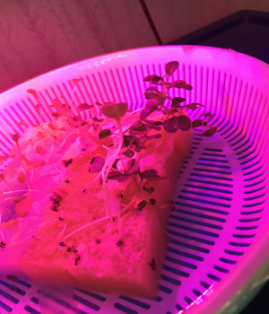
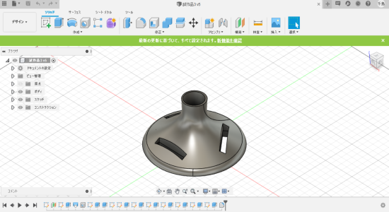
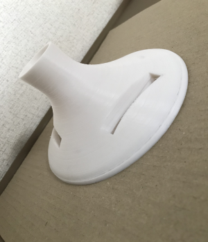
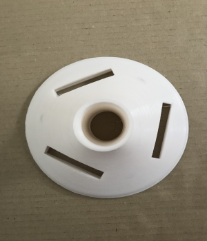
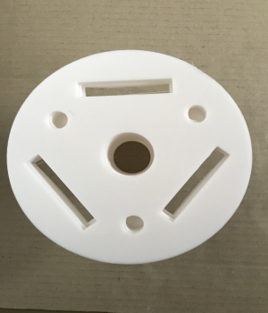
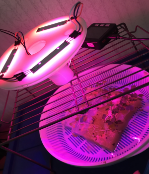
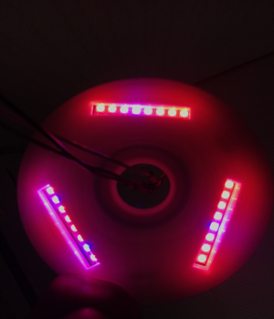
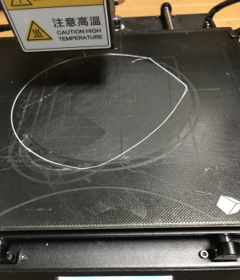

先週から液体肥料を加えて育て始めた。しかし大きな変化があったわけではない。
先週発表したデザイン案の下部以外を印刷してみた。その時に今まで取り組んできた光の機能を取り付けたものに改良してからプリントする。Fujisonでの完成図がこちら。イメージはシンガポールにある植物園である。
今まで角ばったものしか印刷してこなかったので、曲線のラインがうまく印刷できるのか不安ではあったが、思ったよりも綺麗に印刷できた。
  真ん中の穴に配線を通すので、棒について考えなくてもよいデザインとなっている。実際に配線をととおしてみたものと下からの写真がこちら。
 蓋の部分を印刷しようとしたら問題が発生した。それはフィラメントの詰まり・薄すぎる印刷・フィラメントが定着しないの3つである。
フィラメントの詰まりについては渡邉君の助けによって無事に解決。薄すぎる印刷は詰まりと台座が近すぎるのが原因だと考えた。詰まりを治すことで薄すぎる印刷は解決。台座の高さをうまく調整したつもりだったが、今度は写真のように台座にフィラメントが定着しななくなってしまった...いまだに解決できていません
